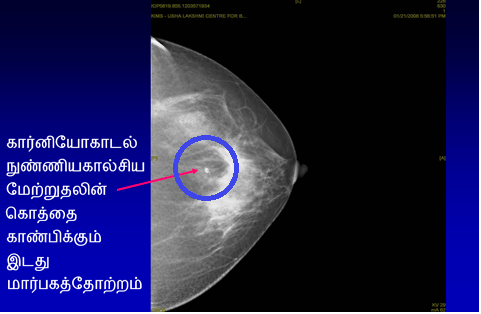
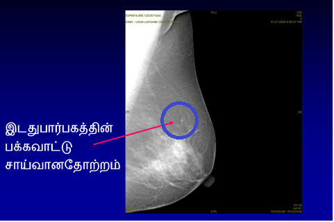

மாமோகிராம் என்றால் என்ன?
மார்பக்க் கட்டி ஃமார்பகத்தில் சமீபத்திய மாற்றம் ஏற்பட்டுள்ளதைக் கவனித்துள்ள ஒருவரில் மாமோகிராம் (மார்பகத்தின் எக்ஸ் கதிர்) செய்யப்படும். சிறந்த நிபுணரால் மருத்துவம் சார்ந்த மார்பகப் பரிசோதனை, மாமோகிராம் மற்றும் மார்பக அல்ட்ராசவுண்ட் ஆகியவற்றின் கலவையானது மார்பகத்திலுள்ள பிரச்சனையைக் கண்டறிய ஃதகுதியற்றதென விலக்க உதவும்.
மருத்துவர்.. என்னால் கட்டியை உணர முடியவில்லை. ஏன் நான் மாமோகிராம் செய்ய வேண்டும்?
ஸ்கிரீனிங் மாமோகிராம் என்றால் என்ன?
மார்பகத்தில் கட்டி இருப்பதை அந்தப் பெண்ணால் அல்லது மருத்துவரால் உணர முடியாத போது, தண்டுப்படா நிலையில் மார்பகப் புற்றுநோயைக் கண்டறிய மாமோகிராம் (மார்பகத்தின் எக்ஸ் கதிர்) செய்யப்படுகிறது. 40 வயதிற்குப் பிறகு ஒவ்வொரு ஆண்டும் ஸ்கிரீனிங் மாமோகிராமைச் செய்வது உசிதமானது.
மாமோகிராபியின் வழியில் மார்பக ஸ்கிரீனிங் செய்வது மார்பகப் புற்றுநோய் வெளியில் தெரியும் முன்பே அதை ஆரம்பநிலையில் கண்டறியச் சிறந்த முறையென நிரூபிக்கப்பட்டுள்ளது. மார்பகப் புற்றுநோயை ஆரம்பநிலையில் கண்டறிவதால் சிறந்த சிகிச்சையளிக்க வாய்ப்புக் கிடைக்கிறது. இது உயிர்வாழும் வீதத்தை கணிசமானளவுக்கு மேம்படுத்துகிறது.




மார்பகப் புற்றுநோய் ஸ்கிரீனிங் ஆனது எல்லா வயதினருக்கும் வினைத்திறனாதா?
“மார்பகத்தைப் பற்றி தெரிந்திருப்பது” எல்லா வயதுப் பெண்களுக்கும் முக்கியமாக இருக்கும் அதேவேளை, மார்பக ஸ்கிரீனிங் ஆனது. 40 வயதிற்கு மேற்பட்ட பெண்களுக்கு மட்டுமே வினைத்திறனானது. 40 வயதிற்குக் குறைந்த மற்றும் நோயறிகுறிகள் இல்லாத பெண்களுக்கு வழக்கமான மார்பக ஸ்கிரினிங் ஆனது வினைத்திறனாக இருப்பதாக நிரூபிக்கப்படவில்லை.
மாமோகிராமைச் செய்வது பாதுகாப்பானதா? இது கதிர்வீச்சுத் தீங்கை உண்டாக்குமா?
மாமோகிராமைச் செய்வது உண்மையில் பாதுகாப்பானது. மாமோகிராபியில் மிகவும் நுண்ணிய அளவு கதிர்வீச்சு சம்பந்தப்படுகிறது – இதனால் உடல்நலத்திற்கு ஏற்படும் ஆபத்து முக்கியத்துவமில்லாத்து. மாமோகிராபியின் போது வழங்கப்படும் கதிர்வீச்சின் அளவு, பல்லை எக்ஸ் கதிர்ப் படம் எடுக்கும் போது பெறும் அளவுக்குச் சமம்.
மாமோகிராபி செய்யும் போது வலிக்குமா?
மாமோகிராபியானது தருணத்திற்கேற்ப அசௌகரியத்தை உண்டாக்கலாம் என்ற போதிலும், இதை முறையாகப் பயிற்சிபெற்ற ரேடியோகிராபர் மூலம் செய்துகொண்டால், வலி இருக்காது. டிஜிட்டல் மாமோகிராபியைச் செய்யும் போது, அசௌகரியம் மேலும் குறைவாகும்.
பாரம்பரிய மாமோகிராமுக்கும் டிஜிட்டல் மாமோகிராமுக்கும் இடையிலுள்ள வேறுபாடு என்ன?
புல் பீல்ட் டிஜிட்டல் மாமோகிராபி என்பது ஒரு புரட்சிகரமான மேம்பாடு, இதில் மார்பகத்தில் படமானது சுமார் ஐந்து வினாடிகளில் உருவாக்கப்படலாம் (பாரம்பரிய மாமோகிராமுடன் ஒப்பிட்டால் அது நான்கு முதல் ஐந்து நிமிடமாக இருக்கும்). இந்தப் புதிய தொழில்நுட்பமானது ஆரம்ப நிலை மார்பகப் புற்றுநோய் மாற்றங்களைக் காட்டுவதில் வழக்கமான மாமோகிராபியை விட அதிக வினைத்திறனானது, குறிப்பாக அடர்ந்த மார்பகங்களைக் கொண்ட இளம் பெண்களில் பயனுள்ளது. பாரம்பரிய மாமோகிராமுடன் ஒப்பிடுகையில் பிற நன்மைகளாக, குறைவான அசௌகரியத்தையும் புறக்கணிக்கத்தக்க கதிர்வீச்சுக்கு வெளிப்படுதலையும் குறிப்பிடலாம், அதோடு மேலே தனிப்படுத்திக் காட்டியவாறு சிறந்த துல்லியமானது.
மேலும், டெலிமெடிசின் வசதிகள் கிடைப்பதால், டிஜிட்டல் படங்களை இரண்டாம் நபரின் அபிப்பிராயத்தைக் கேட்பதற்காக உலகம் எங்கும் அனுப்பலாம். இயந்திரம் மிகவும் விலையுயர்ந்தது என்பதால், புல் பீல்ட் டிஜிட்டல் மாமோகிராபி ஆனது இந்தியாவில் பரவலாகக் கிடைப்பதில்லை
மார்பகப் புற்றுநோயைக் கண்டறிவதில் மாமோகிராபி 100% துல்லியமானதா?
மார்பகப் புற்றுநோயை ஆரம்பகாலத்திலேயே கண்டறிவதற்கு மாமோகிராம்கள் மிக வினைத்திறனான வழியாகும். பிற ஸ்கிரீனிங் சோதனைகளைப் போலவே, அவையும் முழுநேர்த்தியானவை அல்ல. மாமோகிராபியின் துல்லியம் கிட்டத்தட்ட 85% ஆகும். இதற்கான காரணங்கள்:
மார்பகத்தின் எம்.ஆர்.ஐ-இன் பங்கு என்ன?
மார்பக எம்.ஆர்.ஐ ஆனது வழக்கமான மார்பக ஸ்கிரீனிங்குக்கு அல்லது மார்பகப் புற்றுநோயுள்ளவரின் மதிப்பீட்டில் பரிந்துரைக்கப்படவில்லை.
எனினும் இது, சில குறிப்பிட்ட சூழ்நிலைகளில் மிகவும் பயனுள்ளது:
கர்ப்பத்தின் போது மார்பகப் புற்றுநோயைக் கண்டறியலாமா?
கர்ப்பத்தின் போது மார்பகப் புற்றுநோய் அரிதாகவே கண்டறியப்படலாம்.
மார்பகப் புற்றுநோய் கண்டறியப்பட்ட பிறகு கர்ப்பத்தைத் தொடரலாமா?
கர்ப்பம் எந்த மூன்று மாத நிலையில் (கர்ப்பத்தின் நிலை) உள்ளது என்பதைப் பொறுத்து, கர்ப்பத்தைத் தொடர்வதா இல்லையா என்ற முடிவை எடுக்க வேண்டும். கர்ப்பத்தை முடிப்பதா என்ற முடிவு மிகவும் தனிப்பட்ட விஷயம். நிபுணர் குழுவுடனும் பிரசவ மருத்துவ நிபுணருடனும் கலந்துரையாடல் மேற்கொண்ட பிறகு, இந்த முடிவை நோயாளியும் அவரது வாழ்க்கைத்துணையும் மட்டுமே எடுக்கலாம்.
கர்ப்பத்தின் போது செய்யக்கூடிய சிகிச்சைத் தெரிவுகள் எவை?
சிகிச்சையளிக்கும் குழுவில் புற்றுநோய் நிபுணர்களும் பிரசவ நிபுணரும் (கர்ப்பம் மற்றும் மகப்பேறு மருத்துவர்) அடங்க வேண்டும். கர்ப்பத்தின் போது வினைத்திறனான சிகிச்சையை அளிக்க வேண்டும், முடிவுகளை மேற்கொள்ளும் முன்னர், மார்பகப் புற்றுநோய் கண்டறியப்பட்ட பெண்ணுடனும் அவரது வாழ்க்கைத்துணையுடனும் குழுவானது தெரிவுகளைப் பற்றிக் கலந்துரையாட வேண்டும்.
பொதுவாக, அளிக்கப்படும் சிகிச்சையானது மார்பகப் புற்றுநோயின் வகை மற்றும் அளவு, கர்ப்பத்தின் மூன்று மாதகால நிலை மற்றும் தனிப்பட்ட சம்பவங்கள் ஆகியவற்றைப் பொறுத்தது.